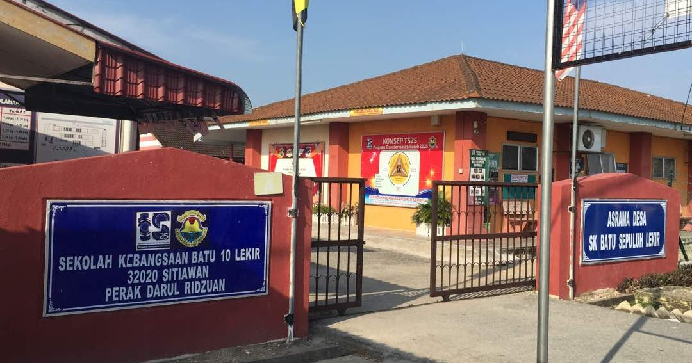
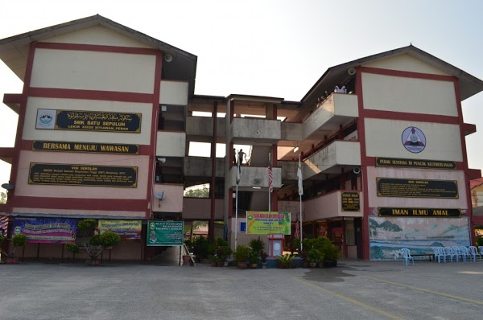
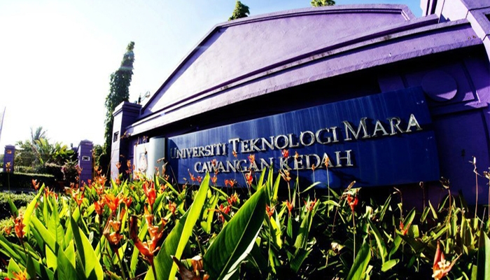

HOME
BIODATA
FAMILY
EXPERIENCE
EDUCATION
HOBBY
GALLERY
MY EDUCATION
I studying at Sekolah Kebangsaan Batu 10 Lekir from 2007 until 2012.
This school has a lot of memory for me. I miss all of my friends and
teacher which I wish we can meet one day if this pandemic over.

6 years later, I went to Sekolah Menengah Batu 10 Lekir from 2013 until
2017. During this time, it teach us about friendship and our journey after
SPM.

After SPM, I got accepted into UiTM in Diploma Information Management and
currently on my last semester. I gain new friends and experience here since
I'm never stay in hostel. Because of pandemic Covid-19, we could only stay in hostel
for 3 semester.
